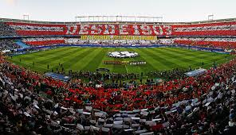

Establece el umbral de rojo:
255
Establece el umbral de verde:
255
Establece el umbral de azul:
255
|  |
|
|
|---|---|---|
|
Establece el umbral de rojo: 255 |
Establece el umbral de verde: 255 |
Establece el umbral de azul: 255 |